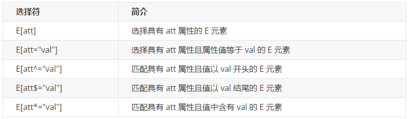
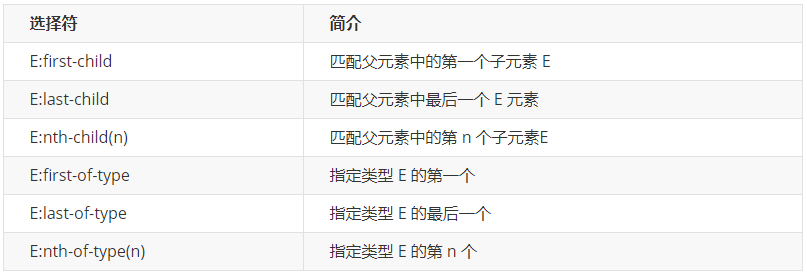

CSS
基础知识¶
Tips¶
-
h1{ }：一条规则 -
起手式
*{
margin: 0;
padding: 0;
box-sizing: border-box; //width包含padding和border
content-box; //width只包含content
}
- 移除链接下划线
text-decoration: none;
- 移除
li圆点
list-style: none;
- 居中
垂直：line-hight = height;
vertical-align: baseline | top | middle | bottom //只适用于 行内元素 和 行内块元素
// 对自己生效
水平：text-align: center;
padding: 0 auto;
position: absolute;
left: 50%;
transform: translateX(-50%);
-
背景颜色作用到border内
-
清除
input默认样式
outline: none;
零碎¶
- 定义常量
:root {
--grey: #f7f7f7;
--white: #fff;
}
div {
background: var(--grey);
}
- 单行文本溢出省略号
/*1. 宽度要固定，先强制一行内显示文本*/
white-space: nowrap; （ 默认 normal 自动换行）
/*2. 超出的部分隐藏*/
overflow: hidden;
/*3. 文字用省略号替代超出的部分*/
text-overflow: ellipsis;
- 多行文本溢出显示省略号
p {
width: 300px;
overflow: hidden;
/*将对象作为弹性伸缩盒子模型显示*/
display: -webkit-box;
/*设置子元素排列方式*/
-webkit-box-orient: vertical;
/*设置显示的行数，多出的部分会显示为...*/
-webkit-line-clamp: 3;
}
-
inline-block元素间有空格，这是
著名的inline-block“换行符/空格间隙问题”，CSDN，ChatGPT 解决办法 -
父元素字号设为0，或
- 子元素添加float属性
在页面中使用CSS¶
<!-- 外链 -->
<link rel="stylesheet" href="/assets/style.css">
<!-- 嵌入 -->
<style>
li {margin: 0; list-style: none;}
p {margin: lem 0;}
</style>
<!-- 内联 -->
<p style="magin: lem 0">Example Content</p>
选择器¶
简介¶
-
Selector
-
找出页面中的元素，以便给他们设置样式
-
使用多种方式选择元素
-
按照标签名、类名或id
- 按照属性
- 按照DOM树中的位置
种类：
-
统配选择器
* {......} -
标签选择器
h1 {} -
ID选择器
<h1 id="title">
#title {......}
- 类选择器
<li class="done"></li>
.done {......}
- 属性选择器
<input value="zhao" disabled />
<input value="123456" type="password" />
[disabled] {......}
input[type="password"] {......}

- "~=" 表示属性中包含独立的单词为 value。
- "|=" 表示属性中必须是完整且唯一的单词，或者以 "-" 分隔开。
- "^=" 表示属性的前几个字母是 value 就可以。
- "$=" 表示属性的后几个字母是 value 就可以。
- "*=" 表示属性中做字符串拆分，只要能拆出来 value 这个词就行。
伪类¶
-
pseudo-classes
-
不基于标签和属性定位元素
-
几种伪类
-
状态伪类
<!-- 对<a>属性设置不同状态下的规则 --> a:link {color: black;} a:visited {color: gray;} a:hover {color: orange;}<!-- 鼠标移到链接上 --> a:active {color: red;} a:focus {outline: 2px solid orange} -
结构性伪类
<ol> <li>阿凡达</li> <li>泰坦尼克号</li> <li>星球大战</li> <li>复仇者联盟</li> <li>侏罗纪世界</li> </ol> <style> li { border-bottom: 1px solid; padding: 0.5em; } li: first-child { color: coral; } li: last-child { border-bottom: none; } </style>
区别：
- nth-child 对父元素里面所有孩子排序选择（序号是固定的） 先找到第n个孩子，然后看看是否和E匹配
- nth-of-type 对父元素里面指定子元素进行排序选择。 先去匹配E ，然后再根据E 找第n个孩子
伪元素选择器¶
可以使用CSS创建新标签元素，二部需要HTML标签，从而简化HTML结构
::before:在元素内部的前面插入内容-
::after:在元素内部的后面插入内容 -
创建出来的是行内元素
- 这个元素在DOM中找不到，故意我们称之为伪元素
- 必须有
content属性 - 和标签选择器相同，权重为1
组合¶
- Combinators
| 名称 | 语法 | 说明 | 示例 |
|---|---|---|---|
| 直接组合 | AB | 满足A的同时满足B | input: focus |
| 后代组合 | A B | 选中B，如果他是A的子孙 | nav a |
| 亲自组合 | A > B | 选中B，如果他是A的子元素 | section > p |
| 兄弟选择器 | A ~ B | 选中B，如果他在A后且和A同级 | h2 ~ p |
| 相邻选择器 | A + B | 选中B，如果他紧跟在A后面 | h2 + p |
选择器组¶
body, h1, h2, h3 {
margin: 0;
padding: 0;
}
[type="checkbox"], [type="radio"] {
box-sizing: border-box;
padding: 0
}
继承、层叠、优先¶
- 某些属性会自动继承其父元素的计算值，除非显示指定一个值
- 和文字相关的一般都可以继承，和模型相关的都不可继承
优先级¶
继承/* < 元素 < 类 < id < 行内 < !important
特异度¶
- Specificity

显式继承¶
* {
box-sizing: inherit;
}
html {
box-sizing: border-box;
}
.some-widget {
box-sizing: content-box;
}
初始值¶
- CSS中，每个属性都有一个初始值
background-color的初始值为transparentmargin-left的初始值为0- 可以用
initial关键字显式重置为初始值 background-color: initial
CSS求值过程¶

布局¶
浮动¶
对于html:
- 文本级标签：p、span、a、b、i、u、em。
- 容器级标签：div、h系列、li、dt、dd。
对于css:
- 行内元素：除了p之外，所有的文本级标签，都是行内元素。p是个文本级，但是是个块级元素。
- 块级元素：所有的容器级标签都是块级元素，还有p标签。
行内元素：
- 与其他行内元素并排；
- 不能设置宽、高。默认的宽度，就是文字的宽度。
块级元素：
- 霸占一行，不能与其他任何元素并列；
- 能接受宽、高。如果不设置宽度，那么宽度将默认变为父亲的100%
pink网页布局准则
- 多个块级元素纵向排列找标准流，多个块级元素和你选哪个排列找浮动
创建浮动
float: right|left|none;
性质：
- 脱离标准流的控制移动到指定位置（脱标）
- 浮动的盒子不再保留原来的位置
- 相当于行内块元素
注意：
- 兄弟们应该一起浮动
- 浮动的盒子只影响后面的标准流，不会影响前面的标准流
清除浮动的方法：
- 隔墙法：在末尾添加一个空块元素，如
div
<div style="clear:both"></div>
- 父级添加
overflow属性，只适用于块级元素
overflow: hidden;
- 父级添加
after伪元素
.mainBox:after{
display: block;
clear:both;
height:0;
content: "";
visibility: hidden;
overflow:hidden;
}
- 父级添加双伪元素
.clearfix::before,.clearfix::after {
content: "";
display: table;
}
.clearfix::after {
clear: both;
}
Flex¶
display: flex;
- 一种新的排版上下文
- 当我们为父盒子设为 flex 布局以后，子元素的 float、clear 和 vertical-align 属性将失效。
- 他可以控制子级盒子的：
- 摆放的流向(← →↑↓)
- 摆放顺序
- 盒子宽度和高度
- 水平和垂直方向的对齐
- 是否允许折行
以下6个属性设置在容器上
- flex-direction：设置主轴的方向
- justify-content：设置主轴上的子元素排列方式
- flex-wrap：设置子元素是否换行
- align-content：设置侧轴上的子元素的排列方式（多行）
- align-items：设置侧轴上的子元素排列方式（单行）
- flex-flow：复合属性，相当于同时设置了 flex-direction 和 flex-wrap
flex-direction属性¶
决定主轴的方向（即项目的排列方向）
flex-direction: row | row-reverse | column | column-reverse

flex-wrap属性¶
是否换行
flex-wrap: nowrap | wrap | wrap-reverse;
flex-flow¶
属性是flex-direction属性和flex-wrap属性的简写形式，默认值为row nowrap
justify-content属性¶
定义了项目在主轴上的对齐方式
justify-content: flex-start | flex-end | center | space-between | space-around;
flex-start（默认值）：左对齐flex-end：右对齐center： 居中space-between：两端对齐，项目之间的间隔都相等。space-around：每个项目两侧的间隔相等。所以，项目之间的间隔比项目与边框的间隔大一倍。

align-items属性¶
-
定义项目在纵轴上如何对齐。
-
该属性是控制子项在侧轴（默认是y轴）上的排列方式，在子项为单项（单行）的时候使用
align-items: stretch | flex-start | flex-end | center | baseline;
flex-start：纵轴的起点对齐。flex-end：纵轴的终点对齐。center：纵轴的中点对齐。baseline: 项目的第一行文字的基线对齐。stretch（默认值）：拉伸，如果项目未设置高度或设为auto，将占满整个容器的高度。

align-content属性¶
- 定义了多根轴线的对齐方式。如果项目只有一根轴线，该属性不起作用。
- 设置子项在侧轴上的排列方式 并且只能用于子项出现 换行 的情况（多行），在单行下是没有效果的。
align-content: flex-start | flex-end | center | space-between | space-around | stretch;
flex-start：与交叉轴的起点对齐。flex-end：与交叉轴的终点对齐。center：与交叉轴的中点对齐。space-between：与交叉轴两端对齐，轴线之间的间隔平均分布。space-around：每根轴线两侧的间隔都相等。所以，轴线之间的间隔比轴线与边框的间隔大一倍。stretch（默认值）：轴线占满整个轴，设置子项元素高度平分父元素高度

以下6个属性设置在项目上
- flex 子项目占的份数
- align-self 控制子项自己在侧轴的排列方式
- order属性定义子项的排列顺序（前后顺序）
order属性¶
定义项目的排列顺序。数值越小，排列越靠前，默认为0。
flex-grow属性¶
定义项目的放大比例，默认为0，即如果存在剩余空间，也不放大
flex-shrink属性¶
定义了项目的缩小比例，默认为1，即如果空间不足，该项目将缩小。
flex-basis属性¶
定义了在分配多余空间之前，项目占据的主轴空间（main size）
浏览器根据这个属性，计算主轴是否有多余空间。它的默认值为auto，即项目的本来大小。
flex属性¶
是flex-grow, flex-shrink 和 flex-basis的简写，默认值为0 1 auto。后两个属性可选。
简写：
flex: x;
相当于：flex: x 1 0;
flex-grow就是家产剩余家产仍有富余的时候该如何分配。flex-shrink就是家产剩余家产不足的时候该如何分配。flex-basis就是分配固定的家产数量。
algn-self属性¶
允许单个项目有与其他项目不一样的对齐方式，可覆盖align-items属性。默认值为auto，表示继承父元素的align-items属性，如果没有父元素，则等同于stretch。
align-self: auto | flex-start | flex-end | center | baseline | stretch;
Flexibility¶
- 可以设置子项的弹性：当容器有剩余空间时，会伸展；容器空间不够时，会收缩
- flex-grow 有剩余空间时的伸展能力
- flx-shrink 容器空间不足时收缩的能力
- flex-basis 没有伸展或收缩时的基础长度

Grid¶
gird游戏：https://cssgridgarden.com/#zh-cn

- display: grid 使元素生成一个块级的 Grid 容器
- 使用grid-template 相关属性将容器划分为网络
- 设置每一个子项站哪些行、列
Grid-line网格线

grid-area: grid-row-start/grid-column-start/grid-row-end/grid-column-end;
作用于容器：
grid-template-*¶
- 指定行高和列宽
.container {
display: grid;
grid-template-columns: 100px 100px 100px;
grid-template-rows: 100px 100px 100px;
}
===
.container {
display: grid;
grid-template-columns: repeat(3, 100px);
grid-template-rows: repeat(3, 100px);
}
画了一个3x3的网格
关键字
-
auto-fill -
有时，单元格的大小是固定的，但是容器的大小不确定。如果希望每一行（或每一列）容纳尽可能多的单元格，这时可以使用
auto-fill关键字表示自动填充
.container {
display: grid;
grid-template-columns: repeat(auto-fill, 100px);
grid-template-columns: repeat(12, 1fr);
}

-
auto-fit与auto-fill相似。他们的差异体现在盒子不足以填满一行、并且单元格的宽度不固定时：auto-fill会保留空格，auto-fit会拉伸以填满一行 -
fr指定比例的单位，相当于flex的flex: number;
.container {
display: grid;
grid-template-columns: 150px 1fr 2fr;
}
minmax()，指定长度的范围
grid-template-columns: 1fr 1fr minmax(100px, 1fr);
minmax(100px, 1fr)表示列宽不小于100px，不大于1fr
auto有浏览器计算宽度
grid-template-columns: 100px auto 100px;
上面代码中，第二列的宽度，基本上等于该列单元格的最大宽度，除非单元格内容设置了min-width，且这个值大于最大宽度。
- 网格线的名称
grid-template-columns属性和grid-template-rows属性里面，还可以使用方括号，指定每一根网格线的名字，方便以后的引用。
.container {
display: grid;
grid-template-columns: [c1] 100px [c2] 100px [c3] auto [c4];
grid-template-rows: [r1] 100px [r2] 100px [r3] auto [r4];
}
网格布局允许同一根线有多个名字，比如[fifth-line row-5]。
grid-gap¶
row-gap属性设置行与行的间隔（行间距）column-gap属性设置列与列的间隔（列间距）gap属性是grid-column-gap和grid-row-gap的合并简写形式，适用于flex和grid- 如果
grid-gap省略了第二个值，浏览器认为第二个值等于第一个值。
grid-template-areas¶
网格布局允许指定"区域"（area），一个区域由单个或多个单元格组成。
grid-template-areas性用于定义区域。
- 下面代码先划分出9个单元格，然后将其定名为
a到i的九个区域，分别对应这九个单元格
.container {
display: grid;
grid-template-columns: 100px 100px 100px;
grid-template-rows: 100px 100px 100px;
grid-template-areas: 'a b c'
'd e f'
'g h i';
}
- 多个单元格合并成一个区域的写法如下：
grid-template-areas: "header header header"
"main main sidebar"
"footer footer footer";
- 如果某些区域不需要利用，则使用"点"（
.）表示：
grid-template-areas: 'a . c'
'd . f'
'g . i';
上面代码中，中间一列为点，表示没有用到该单元格，或者该单元格不属于任何区域
注意，区域的命名会影响到网格线。每个区域的起始网格线，会自动命名为
区域名-start，终止网格线自动命名为区域名-end。比如，区域名为
header，则起始位置的水平网格线和垂直网格线叫做header-start，终止位置的水平网格线和垂直网格线叫做header-end
grid-auto-flow¶
-
指定项目的填充顺序
-
默认先行后列
-
grid-auto-flow: column;先列后行 -
row dense和column dense这两个值主要用于指定，某些项目指定位置以后，剩下的项目自动放置的方式——不留空格：
grid-auto-flow: row dense;

justify-items，align-items，place-items¶
-
justify-items属性设置单元格内容的**水平**位置（左中右） -
align-items属性设置单元格内容的**垂直**位置（上中下） -
place-items属性是align-items属性和justify-items属性的合并简写形式
.container {
justify-items: start | end | center | stretch;
align-items: start | end | center | stretch;
}
place-items: <align-items> <justify-items>;
justify-content，align-content，place-content¶
- 指定整个grid网表在容器中的位置（grid可能没有填满容器）
- start - 对齐容器的起始边框。
- end - 对齐容器的结束边框
- center - 容器内部居中
- stretch - 项目大小没有指定时，拉伸占据整个网格容器
- space-around - 每个项目两侧的间隔相等。所以，项目之间的间隔比项目与容器边框的间隔大一倍
- space-between - 项目与项目的间隔相等，项目与容器边框之间没有间隔
- space-evenly - 项目与项目的间隔相等，项目与容器边框之间也是同样长度的间隔
place-content: <align-content> <justify-content>如果省略第二个值，浏览器就会假定第二个值等于第一个值
grid-auto-columns，grid-auto-rows¶
- 定义网格外部元素的宽高
- 默认是单元格内容的大小
grid-template，grid¶
grid-template属性是grid-template-columns、grid-template-rows和grid-template-areas这三个属性的合并简写形式grid属性是grid-template-rows、grid-template-columns、grid-template-areas、grid-auto-rows、grid-auto-columns、grid-auto-flow这六个属性的合并简写形式
项目属性
grid-column-* 属性， grid-row-* 属性¶
grid-column-start属性：左边框所在的垂直网格线grid-column-end属性：右边框所在的垂直网格线grid-row-start属性：上边框所在的水平网格线grid-row-end属性：下边框所在的水平网格线）-
支持负数
-
这四个属性的值，除了指定为第几个网格线，还可以指定为网格线的名字
.item-1 {
grid-column-start: header-start;
grid-column-end: header-end;
}
- 这四个属性的值还可以使用
span关键字，表示"跨越"，即左右边框（上下边框）之间跨越多少个网格
.item-1 {
grid-column-start: span 2;
grid-column: 2 / span 3
}

.item {
grid-column: <start-line> / <end-line>;
grid-row: <start-line> / <end-line>;
}
斜杠以及后面的部分可以省略，默认跨越一个网格。
grid-area¶
- 指定项目放在哪一个区域
.item-1 {
grid-area: e;
}
grid-area属性还可用作grid-row-start、grid-column-start、grid-row-end、grid-column-end的合并简写形式，直接指定项目的位置
.item-1 {
grid-area: 1 / 1 / 3 / 3;
}
justify-self 属性， align-self 属性， place-self 属性¶
justify-self属性设置单元格内容的水平位置（左中右），跟justify-items属性的用法完全一致，但只作用于单个项目
Position¶
-
static : 默认值，静态定位，不受
left/right...影响 -
relative：相对自己，不影响文档流
子绝父相
- absolute：相对父亲偏移，移出文档流
定位基点（一般是父元素）不能是static定位，否则定位基点就会变成整个网页的根元素html
- fixed: 固定定位，相对浏览器窗口，脱离文档流。适合用于固定浮窗、导航条
会把元素的宽高设置成内容的宽高，right:0 left:0可以让宽度占满包含容器
- sticky: 相当于relative和fixed的结合体
Layout
- 确定内容的大小和位置的算法
- 依据元素、容器、兄弟节点和内容等信息来计算
布局相关技术
- 常规流
- 行级
- 块级
- 表格布局
- FlexBox
- Grid布局
- 浮动
- 绝对定位
display¶
https://www.cnblogs.com/keithwang/p/3139517.html
block: 块级元素，相当于一行，独占一行。可以通过css设置宽高，只作用于content，同行仍然不能有其他元素inline: 行级元素，无视**宽度和高度**，大小依内容，内容多大就占多大地方-
inline-block: 高度和宽度都生效 -
block: 块级盒子
-
inline: 行级盒子
-
inline-block:
-
本身是行级，可以放在行盒中；
-
可以设置宽高；
-
作为一个整体不会被拆散成多行
-
none: 排版时完全忽略
常规流¶
normal flow
- 根元素、浮动和绝对定位的元素会脱离常规流
- 其他元素都在常规流之内(in-flow)
- 常规流中的盒子，在某种排版上下文中参与布局
- 行级排版上下文
- 块级排版上下文
- Table 排版上下文
- Flex 排版上下文
- Grid 排版上下文
行级排版上下文¶
- Inline Formatting Context( IFC )
- 只包含行级盒子和容器会创建一个 IFC
- IFC 内的排版规则
- 盒子在一行内水平摆放
- 一行放不下时，换行显示
- text-align 决定一行内盒子的水平对齐
- vertical-align 决定一个盒子在行内的垂直对齐
- 避开浮动( float )元素
块级排版上下文¶
-
Block Formatting Context( BFC )
-
某些元素会创建一个BFC
-
根元素
- 浮动、绝对定位、inlie-block
- Flex 子项和 Grid 子项
- overflow 值不是 visible 的块盒
-
display: flow-root
-
BFC 内的排版规则
-
盒子从上到下摆放
- 垂直 margin 合并
- BFC 内盒子的 margin 不会与外面的合并
- BFC 不会和浮动元素重叠
定位¶
position
https://www.ruanyifeng.com/blog/2019/11/css-position.html
- static 默认值，非定位元素
- relative 相对于自身原本位置便宜，不脱离文档流
- absolute 绝对定位，相对于非 static 祖先元素定位
- fixed 相对于视口绝对定位
- 当页面滚动，父元素开始脱离视口时（即部分不可见），只要与
sticky元素的距离达到生效门槛，relative定位自动切换为fixed定位；等到父元素完全脱离视口时（即完全不可见），fixed定位自动切换回relative定位。
relative¶
- 在常规流里面布局
- 相对于自己本应该在的位置进行偏移
- 使用 top、left、bottom、right 设置偏移长度
- 流内其他元素当它没有偏移一样布局
absolue¶
- 脱离常规流
- 相对于最近的非static祖先定位
- 不会对流内元素布局造成影响
盒模型¶
-
content → padding → border → margin
-
内容 → 内边距 → 边框 → 外边距

width¶
- 指定content box宽度
- 取值为长度、百分数、auto
- auto由浏览器根据其他属性确定
- 百分数相对于容器的content box宽度
height¶
- 指定content box 高度
- 取值为长度、百分数、auto
- auto 取值由内容计算得来
- 百分数相对于容器的 content box 高度
- 容器有指定的高度时，百分数才生效
padding¶

- 指定元素四个方向的内边距
- 百分数相对于容器宽度
-
- padding
- top-bottom left-right
- top right bottom left
border¶
-
指定容器边框样式、粗细和颜色
-
三种属性
- border-width
- border-style
- border-color
- 四个方向
- border-top
- border-right
- border-bottom
- border-left
border: 1px solid #ccc;
border-left: 1px solid #ccc;
border-right: 2px dotted red;
border-width: 1px 2px 3px 4px;
border-style: solid;
border-color: green blue;
border-left-width: 3px;
border-top-color #f00;
margin¶
-
指定元素四个方向的外边距
-
取值可以是长度、百分数、auto
-
百分数相对于容器宽度
-
margin塌陷：父子嵌套的元素垂直方向的
margin取最大值。（父元素会抢夺子元素竖直方向的margin值）
解决：overflow: hidden;
- margin: auto可以水平居中
div {
width: 200px;
height: 200px;
background: coral;
margin-left: auto;
margin-right: auto;
}
margin collapse¶
margin在垂直方向边距的冗合并/折叠
border-box¶
可以分为content-box和border-box，默认为前者

.a {
width: 100%;
padding: 1em;
border: 3px solid #ccc;
}
.b {
box-sizing: border-box;
width: 100%;
padding: 1em;
border: 3px solid #ccC;
}
<!-- a会比b宽一点 -->
* {
box-sizing: border-box;
}
overflow¶
overflow:
- visible
- hidden
- scroll（滚动）
盒模型¶
可以用padding撑开盒子
- 块级
- 不和其他盒子并列摆放
- 适用于所有的盒模型属性
- 行级
- 和其他行级盒子一起放在一行或拆开成多行
-
盒模型中的width、height不适用
-
块级元素
- 生成块级盒子
- body、article、div、main、section、h1-6、p、ul、li
- display: block
margin: 0 auto可以水平居中- 行级元素
- 生成行级盒子，内容分散在多个行盒(line box)中
- span、em、strong、cite、code
- display: inline
属性¶
鼠标¶
cursor
https://developer.mozilla.org/zh-CN/docs/Web/CSS/cursor
- pointer: 手，悬浮于链接上
- not-allowed：禁止，不能执行
- grab: 抓取
- default: 默认，一般为箭头
颜色¶
RGB¶
- 6位十六进制数
- rgb(a, b, c)，其中abc为0~255的10进制数
HSL¶
- Hue色相，如红色、黄色等，取值范围0~350
- Saturation饱和度，色彩的鲜艳程度，越高越鲜艳，取值范围0~100%
- Lightness亮度，明亮程度，越高颜色越亮，取值范围0~100%
字体¶
font-family¶

- 上传字体：Web Fonts
<h1>web fonts are awesome!</h1>
<style>
@font-face {
font-family: "Megrim";
src: url(https: //fonts.gstatic.com/s/megrim/v11/46kulbz5wjvLqJZVam_hVUdI1w.woff2)format ( 'woff2' );
}
h1 {
font-family: Megrim,Cursive;
}
</style>
font-size¶
- 关键字
- small, medium, large
- 长度
- px，一个像素
- em，相对于父级的大小
- 百分数
- 相对于父元素字体大小
text-indent: 2em首行缩进
盒子阴影¶
box-shadow: h-shadow v-shadow blur spread color insert;

背景¶
background-image: url();
background-repeat: no-repeat;
background-size: cover 全覆盖背景
| contain 最大化显示
backdrop-filter: blur(25px); //毛玻璃效果
渐变背景：
background: -webkit-linear-gradent(red, blue)
backgorund: linear-gradient(45deg, white, black)
字体属性¶
复合属性：
font: font-style font-weight font-size/line-height font-family;
<!-- 一定要有字号和字体 -->
| 属性 | 值 | 备注 |
|---|---|---|
| font-family | "微软雅黑"（"Microsoft Yahei"）, Consol | 先后顺序代表优先级，在最后加一个通用字体族 |
| font-size | 16px(像素) | 必须加单位 |
| font-weight | lighter/ normal/ bold/ bolder/ number(700) | 字重，推荐用数字 100 ~ 900 |
| font-style | normal/ italic | 很少用 |
文本属性¶
| 属性 | 值 | 备注 |
|---|---|---|
| color | red/ #000000/ rgb(0,0,0) | 三种格式 |
| text-align 对齐文本 | left/ right/ center | |
| text-decoration 装饰文本 | none/ underline/ overline/ line-through | |
| text-indent 文本首行缩进 | xx px/ 2em | em是一个相对单位，恒为当前一个字符的大小 |
| line-height 行高/行间距 | xx px | 没有单位时，表示为字体大小的xx倍，是相对大小 |
white-space¶
控制空白符的展示
- normal
- nowrap
- pre
- pre-wrap
- pre-line
a标签¶
- 文本内链接：
name target="_blank|_self|_top|_parent"
动画¶
https://juejin.cn/post/6970883520168198158
- 过渡：transition
- 2D 转换 transform
- 3D 转换 transform
- 自定义动画：animation
transition¶
实现**补间**动画
- 补间动画：自动完成从起始状态到终止状态的的过渡。不用管中间的状态。
- 帧动画：通过一帧一帧的画面按照固定顺序和速度播放。如电影胶片。
相关属性：
transition-property: all;如果希望所有的属性都发生过渡，就使用all。transition-duration: 1s;过渡的持续时间。transition-timing-function: linear;运动曲线。属性值可以是：linear线性ease减速ease-in加速ease-out减速ease-in-out先加速后减速transition-delay: 1s;过渡延迟。多长时间后再执行这个过渡动画。
综合：
transition: 让哪些属性进行过度 过渡的持续时间 运动曲线 延迟时间;
transition: all 3s linear 0s;
触发方式：
.box{
width: 200px;
background-color: green;
/* 谁要过渡给谁加 */
transition: width 2s linear 0s;
}
.box:hover{
width: 500px;
background-color: orange;
}
当:hover伪类被触发后，会启动transition向:hover的属性变化
transition只用来控制时长
transform¶
- 2D 转换：缩放、移动、旋转。
- 3D 转换：
2D:
缩放scale¶
.box2:hover {
background-color: yellowgreen;
transform: scale(2, 0.5);
}
- x: x方向的缩放倍数
- y: y方向的缩放倍数
位移translate¶
transform:translate(-50%, -50%);
相对于自身移动
旋转rotate¶
transition: all 2s;
transform: rotate(45deg)
正值：顺时针；负值：逆时针
**transform: rotate()必须和transition**配合使用
rotate 旋转时，默认是以盒子的正中心为坐标原点的。如果想**改变旋转的坐标原点**，可以用transform-origin属性
transform-origin: center bottom; //旋转时，以盒子底部的中心为坐标原点
3D:
让元素保留立体空间
transform-style: preserve-3d;
旋转：
- x: 右
- y: 下
- z: 垂直屏幕向上
transform: rotateX(360deg); //绕 X 轴旋转360度 //顺时针
transform: rotateY(360deg); //绕 Y 轴旋转360度
transform: rotateZ(360deg); //绕 Z 轴旋转360度
平移：
transform: translateX(100px); //沿着 X 轴移动
transform: translateY(360px); //沿着 Y 轴移动
transform: translateZ(360px); //沿着 Z 轴移动
透视：perspective
电脑显示屏是一个 2D 平面，图像之所以具有立体感（3D效果），其实只是一种视觉呈现，通过透视可以实现此目的。
透视可以将一个2D平面，在转换的过程当中，呈现3D效果。但仅仅只是视觉呈现出 3d 效果，并不是正真的3d。
格式有两种写法：
- 作为一个属性，设置给**父元素**，作用于所有3D转换的子元素
- 作为 transform 属性的一个值，做用于元素自身。
格式举例：
perspective: 500px;
animation¶
// 关键帧定义
@keyframes animateName{
0% { width:50px; height:50px; }
50% { width:100px; height:100px; }
100% { width:50px; height:50px; }
}
// 0%和100%分别可以用from和to代替，也可以省略
.box {
width: 50px;
height: 50px;
background-color: pink;
// 使用
// animation: 定义的动画名称 持续时间 执行次数 是否反向 运动曲线 延迟执行。(infinite 表示无限次)
animation-name: test;
animation-duration: 2s;
animation-iteration-count: infinite;
animation-timing-function: linear;
// animation: 36.5s linear 0s infinite orbit;
}
-
animation-duration: 动画单次播放时间 -
animation-iteration-count: 动画播放次数 -
animation-timing-function: 速度函数 -
animation-delay: 动画延迟时间
| 值 | 描述 |
|---|---|
| linear | 动画从头到尾的速度是相同的。 |
| ease（缓解） | 默认值：动画以低速开始，然后加快，在结束前变慢。 |
| ease-in | 动画以低速开始。 |
| ease-out | 动画以低速结束。 |
| ease-in-out | 动画以低速开始和结束。 |
| cubic-bezier(n,n,n,n) | 贝塞尔曲线（自定义数值），可到相关网站可视化设置。 |
animation-direction: 动画播放顺序：正序 / 逆序
| 值 | 描述 |
|---|---|
| normal | 默认值。动画按正常播放。 |
| reverse | 动画反向播放。 |
| alternate（交替的） | 动画正向交替执行（正向->反向）Loop。 |
| alternate-reverse | 动画反向交替执行（反向->正向）Loop。 |
| inherit | 从父元素继承该属性。 |
animation-fill-mode用于设置动画的填充模式，主要应用的属性值为：
| 值 | 描述 |
|---|---|
| none | 默认值。动画在动画执行前后，不会应用任何样式到目标元素。 |
| forwards | 在动画结束后（由 animation-iteration-count 决定），目标元素将保持应用最后帧动画。 |
| backwards | 在动画结束后（由 animation-iteration-count 决定），目标元素将保持应用起始帧动画。 |
媒体查询¶
- 从小屏到大屏
@media mediatype and|not|only (media feature){
CSS-code;
}
或
<link rel="stylesheet" href="style.css" media="screen and (min-width:540px)">
mediatype媒体类型
| 值 | 解释 |
|---|---|
| all | 用于所有设备 |
| 用于打印机和预览 | |
| screen | 用于电脑屏幕、平板电脑、智能手机 |
media feature媒体特性，必须加小括号
| 值 | 说明 |
|---|---|
width |
定义输出设备中页面可见区域的宽度 |
min-width: xxx; |
定义输出设备中页面最小可见区域宽度（当屏幕**大于**xxx时） |
max-width: yyy; |
定义输出设备中页面最大可见区域宽度（当屏幕**小于**yyy时） |
经典案例¶
tab切换¶
https://segmentfault.com/a/1190000015665887
<div class="tabs">
<div class="tab-pane">
<input type="radio" name="tab" id="tab01" checked />
<label class="tab-item" for="tab01">tab01</label>
<div class="tab-content">111</div>
</div>
<div class="tab-pane">
<input type="radio" name="tab" id="tab02"/>
<label class="tab-item" for="tab02">tab02</label>
<div class="tab-content">222</div>
</div>
<div class="tab-pane">
<input type="radio" name="tab" id="tab03"/>
<label class="tab-item" for="tab03">tab03</label>
<div class="tab-content">333</div>
</div>
</div>
<style>
.tabs{
position:relative;
width:400px;
height:300px;
}
.tab-pane{
display:inline-block;
}
.tabs input[type='radio']{
position:absolute;
clip:rect(0,0,0,0)
}
.tab-item{
display:block;
height:34px;
line-height:34px;
cursor:pointer;
padding:0 10px
}
.tabs input[type='radio']:checked+.tab-item{
background:orangered;
color:#fff
}
.tab-content{
position:absolute;
border:1px solid #eee;
padding:20px;
left:0;
top:36px;
bottom:0;
right:0;
background:#fff;
}
.tabs input[type='radio']:checked+.tab-item+.tab-content{
z-index:1
}
</style>
- 使用
absolute实现内容重叠 - 使用
input[type='radio']和label创建标签 - 使用
clip:rect(0,0,0,0)隐藏input标签
CSS3¶
filter属性¶
fluter: blur(5px);
计算属性¶
width: calc(100% - 80px);- 永远比父元素小80像素
Less & Sass¶
Less¶
- Less （Leaner Style Sheets 的缩写） 是一门 CSS 扩展语言，也成为CSS预处理器。
- 做为 CSS 的一种形式的扩展，它并没有减少 CSS 的功能，而是在现有的 CSS 语法上，为CSS加入程序式语言的特性。
- 它在 CSS 的语法基础之上，引入了变量，Mixin（混入），运算以及函数等功能，大大简化了 CSS 的编写，并且降低了 CSS 的维护成本，就像它的名称所说的那样，Less 可以让我们用更少的代码做更多的事情。
- Less中文网址： http://lesscss.cn/
- 常见的CSS预处理器：Sass、Less、Stylus
-
一句话：Less 是一门 CSS 预处理语言，它扩展了CSS的动态特性。
-
less变量
定义@var-name: var-value;
使用@var-name
- less嵌套
后继：直接写，有空格
div{
a{
}
}
===
div a{
}
同级：加&，没空格
div{
&:hover{
}
}
===
div:hover{
}
-
less运算
-
运算符两边必须加空格
- 对于两个不同的单位的值之间的运算，运算结果的值取第一个值的单位
-
如果两个值之间只有一个值有单位，则运算结果就取该单位
-
less互相引用
@import "common";
Sass¶
- 定义变量：
$bg_color: #ccc
-
嵌套：同less
-
插值语句：
$name: foo;
$attr: border;
p.#{$name} {
#{$attr}-color: blue;
}
// 编译：
p.foo {
border-color: blue;
}
@at-root:：跳出一个css范围
.parent {
...
@at-root .child { ... }
}
======
.parent { ... }
.child { ... }
- 混合指令
定义：
@mixin large-text {
font: {
family: Arial;
size: 20px;
weight: bold;
}
color: #ff0000;
}
使用：
.page-title {
@include large-text;
padding: 4px;
margin-top: 10px;
}
效果：
.page-title {
font-family: Arial;
font-size: 20px;
font-weight: bold;
color: #ff0000;
padding: 4px;
margin-top: 10px; }
还可以使用参数：
@mixin sexy-border($color, $width) {
border: {
color: $color;
width: $width;
style: dashed;
}
}
p { @include sexy-border(blue, 1in); }
BootStrap¶


https://zhuanlan.zhihu.com/p/25770579
-
mb-3表示margin-bottom: 1rem -
0- for classes that eliminate themarginorpaddingby setting it to `0``
-
1- (by default) for classes that set themarginorpaddingto$spacer * .25 -
2- (by default) for classes that set themarginorpaddingto$spacer * .5 -
3- (by default) for classes that set themarginorpaddingto$spacer 4- (by default) for classes that set themarginorpaddingto$spacer * 1.55- (by default) for classes that set themarginorpaddingto$spacer * 3-
$spacer表示一个rem -
col表示占一列，当有多个时，会均匀分布